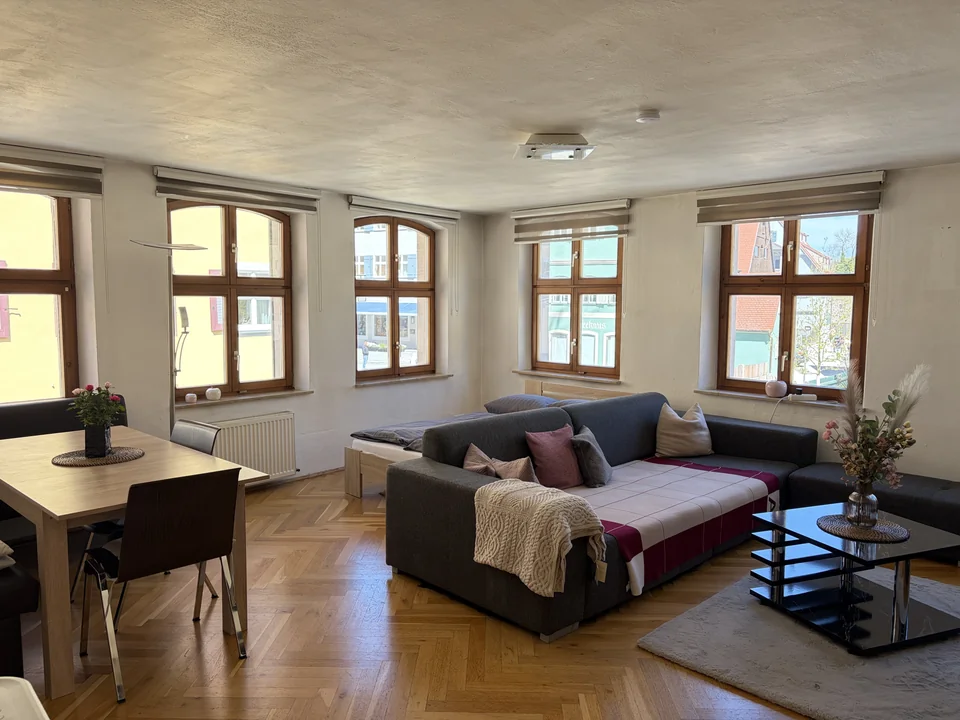

80 m² · bis zu 4 Gäste
AltstadtApartment
2 Schlafzimmer · eigene Küche · WLAN
Termine & Preise prüfenÖffnet die bestehende Smoobu-BuchungApartment vorher ansehenIhre Auszeit beginnt hier
Wählen Sie ein Apartment. Im nächsten Schritt prüfen Sie freie Termine, Preise und Buchungsbedingungen direkt in unserer Smoobu-Buchung.

80 m² · bis zu 4 Gäste
2 Schlafzimmer · eigene Küche · WLAN
Termine & Preise prüfenÖffnet die bestehende Smoobu-BuchungApartment vorher ansehen
85 m² · bis zu 6 Gäste
3 Schlafzimmer · eigene Küche · WLAN
Termine & Preise prüfenÖffnet die bestehende Smoobu-BuchungApartment vorher ansehenVorfreude beginnt mit einem Hallo.
Sie möchten etwas zu Ihrem Aufenthalt wissen? Ihr Ansprechpartner Kurt Stollenmeier hilft Ihnen persönlich weiter.
0171 122 87 65 stollenmeierk@yahoo.deOhne Umweg über große Buchungsportale und ohne zusätzliche Plattformgebühren.
Kurt Stollenmeier unterstützt Sie bei Fragen rund um Ihren Aufenthalt.
Freie Termine und die konkreten Konditionen direkt für Ihr Wunsch-Apartment prüfen.